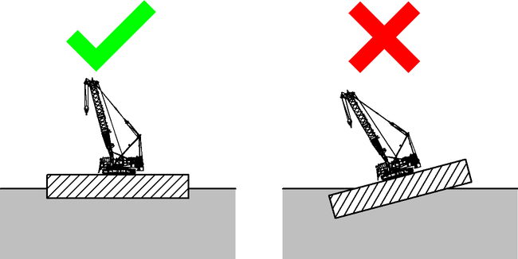

Betrieb der Maschine auf schwimmender Konstruktion

GEFAHR
Unsachgemäßer Betrieb der Maschine auf schwimmender Konstruktion!
Kippen der Maschine, Versagen der Struktur.
Maschine ausschließlich unter Einhaltung aller folgenden Vorschriften auf schwimmender Konstruktion betreiben. |

GEFAHR
Unzulässiger Betrieb der Maschine bei Überschreiten der maximal zulässigen Neigung!
Kippen der Maschine, Versagen der Struktur.
Vorwort der gültigen Traglasttabelle beachten. |
Sicherstellen, dass Maschine auf schwimmender Konstruktion ausschließlich bei zulässigen Neigungswinkeln betrieben wird. |
Sicherstellen, dass maximale Traglast im zulässigen Bereich einer gültigen Traglasttabelle nicht überschritten wird. |

Hinweis
Liebherr empfiehlt: | |
Lasten mit Hilfe des Assistenzsystems „Vertical Line Finder“ heben, um Schrägzug beim Anheben oder Absetzen der Last zu vermeiden (Weitere Informationen siehe: „Assistenzsystem Vertical Line Finder“). | |
Generell hat der Betrieb der Maschine auf schwimmender Konstruktion in gleicher Art und Weise wie an Land zu erfolgen.
Die aus dem Betrieb der Maschine resultierenden Kräfte und Bodendrücke werden von der Struktur der schwimmenden Konstruktion sicher aufgenommen.
Die Entscheidung, ob die schwimmende Konstruktion für den Betrieb mit der Maschine geeignet ist, unterliegt der alleinigen Verantwortung des Betreibers.
Der Betrieb von mehr als einer Maschine auf einer schwimmenden Konstruktion ist verboten.
Das Absenken des Lastaufnahmemittels oder der Last unter den Wasserspiegel ist verboten.

Fig. 3765: Lage der schwimmenden Konstruktion im Wasser
Fig. 3765: Lage der schwimmenden Konstruktion im Wasser
Sicherstellen, dass folgende Voraussetzungen erfüllt sind:
❑ | Schwimmende Konstruktion befindet sich auf geschützten Gewässern (Hafenbedingungen, Gewässer mit signifikanter Wellenhöhe ≤ 0.5 m (1.64 ft)). |
❑ | Auslegerkonfiguration 1 - Hauptausleger (+ Spitzenausleger) ist aufgebaut. |
❑ | Nationale und internationale Richtlinien und Vorschriften werden eingehalten. |
❑ | Schwimmende Konstruktion ist von einem qualifizierten Schiffbauingenieur für Betrieb mit Maschine freigegeben. |
❑ | Einsatzplanung und Risikobeurteilung wurden durchgeführt. |
❑ | Bewegungen der schwimmenden Konstruktion sind während des Betriebs der Maschine innerhalb der auf Bildschirmseite Berechnungsvorschriften vorgewählten Neigung. |
❑ | Maximal vorwählbare Neigung auf Bildschirmseite Berechnungsvorschriften wird während des Betriebs der Maschine nie überschritten. |
❑ | Gesamte obere Fläche der schwimmenden Konstruktion ist über Wasser. |
❑ | Gesamte untere Fläche der schwimmenden Konstruktion ist unter Wasser. |
❑ | Schwimmende Konstruktion ist verankert oder vertäut. |
❑ | Maschine ist mit breiter Spur aufgerüstet. |
❑ | Unzulässiger Schrägzug des Lastaufnahmemittels bzw. der Last aufgrund einer Bewegung der schwimmenden Konstruktion oder des Lastorts tritt nicht ein. |
- Betriebsart und Rüstzustand für Einsatzort schwimmende Konstruktion wählen
- Maschine auf schwimmender Konstruktion auffahren oder von schwimmender Konstruktion herunterfahren
- Maschine auf schwimmender Konstruktion fahren
- Maschine für Betrieb auf schwimmender Konstruktion verzurren
- Maschine auf schwimmender Konstruktion betreiben
- Einsatzort der schwimmenden Konstruktion mit verzurrter Maschine verlagern
- Betriebsart und Rüstzustand für Einsatzort Land wählen